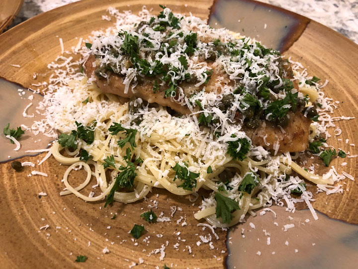

Garlic-Chicken-Picatta
Chicken lightly dredged in flour and parmesan cheese, pan fried until a soft golden crust forms and finished off in a buttery, silky, lemon garlic sauce with capers and white wine or stock! It doesn’t get any better than this easy chicken piccata for dinner!
- Prep Time: 10 Minutes
- Cook Time: 20 Minutes
- Total Time: 30 Minutes